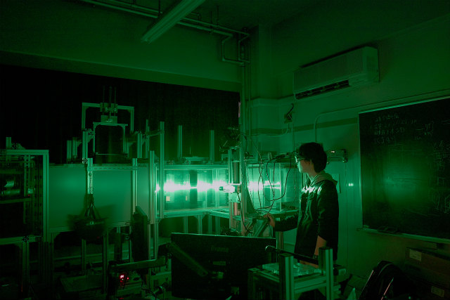

最大流速： 200 (mm/sec)
最大速度偏差： 1.9% (除側壁 50mm)
乱れ度： 2.0% (除側壁 100mm)
製作年月： 1986 Sept.
設計責任： 串山正
設計担当： 村田滋 吉岡均
| トップ ページ |
研究 テーマ |
研究 報告 |
研究 スタッフ |
研究 設備 |
研究室の 所在地 |
|---|
| 教育・研究 理念 |
産学連携 のご案内 |
学生の 募集 |
講義に関 する情報 |
研究関連 リンク |
用語解説 |
|---|
|
|
測定部： 2100 x 500 x 500 (mm) 最大流速： 200 (mm/sec) 最大速度偏差： 1.9% (除側壁 50mm) 乱れ度： 2.0% (除側壁 100mm) 製作年月： 1986 Sept. 設計責任： 串山正 設計担当： 村田滋 吉岡均 | ||

2010 Nov.:設計 |
2011 Nov.:製作 | ||
|
2012 Nov.:簡易揚抗計（4つ支持），高速度カメラ(MotionPro)，ハロゲンシート |

2013 Nov.:簡易揚抗計（カンチレーバー），NACA0012翼（アクリル），USBカメラ撮影，ハロゲンシート | ||
|
2014 Nov.:簡易揚抗計（カンチレーバー），NACA0012翼（アクリル）高速度カメラ（FASTCAM Mini），Greenレーザー |
2015 Nov.:NACA0012翼（ジュラルミン）高速度カメラ（FASTCAM Mini），Greenレーザー（多層シート光） | ||
|

2016 Nov.:ステレオPIVシステム，NACA0012翼（ジュラルミン）高速度カメラ2台（FASTCAM Mini），Greenレーザー（多層シート光） |

2017 Nov.:ステレオPIVシステム，NACA0012翼（ジュラルミン）高速度カメラ2台（FASTCAM Mini），Greenレーザー（多層シート光），揚抗計（ロードセル，ステレオPIVシステムと同期） | ||
|
|
製造： Cyberware Laboratory 品名： Color 3D Digitizer 形式： 3030RGB/PS | ||
|
|
製造： Hi-Tech Electronics Pte Ltd 品名： MotionPro 形式： HS-1 1280 x 1024 Resolution CMOS Sensor Up to 650 fps at full resolution / 35,000 fps at reduced resolution Up to 4GB of storage capacity | ||
|
|
製造： Sony 品名： 1/3" Monochrome Progressive Scan Camera 形式： XC-55 659 x 494 Resolution Progressive Scan CCD Sensor Up to 60 fps (Interlaced) / 30 fps (Non-Interlaced) Size: 29 (w) x 29 (h) x 67 (d) mm, 110g | ||
|
|
製造： Photron 品名： FASTCAM Mini 形式： UX100 1280 x 1024 Resolution Progressive Scan CCD Sensor Up to 4000 fps at full resolution / 800000 fps at reduced Size: 120 (w) x 120 (h) x 90 (d) mm, 1.5kg Up to 16GB of storage capacity | ||

|
製造： SOC 品名： ヘリウムネオンレーザー 形式： GLG5800 | ||

|
製造： B&W Tek, Inc. 品名： Diode Pumped Solid State NIR Laser 形式： BWR Near Infrared Nd:YVO4 lasers Modulation input for up to 20KHz | ||

|
製造： QUANTUM DESIGN JAPAN 品名： Green Laser Module 形式： GLM-CW-030A Wave length 532nm Output 20mW | ||
|
|
製造： ユーテクノロジー 品名： 超高輝度LED光源 形式： UFLS-75-08W 出力光束： 3000lm 相関色温度： 6000K〜8500K | ||

|
製造： 日本レーザー 品名： DPSS Greenレーザー 形式： DPGL-2W 発振モード： CW 出力可変（連続発光） / パルス発振対応（ストラドリング撮影対応） 波長： 532 nm | ||
|
|
製造： FLIR 品名： 赤外線サーモグラフィ 形式： FLIR i5 | ||
|
|
製造： GRAPHTEC 品名： データロガーmidiLOGGER 形式： GL900-8 アナログ入力ch数8ch サンプリング周期： 10 μs〜1 min | ||
|
|
製造： KEYENCE 品名： NR-500 ユニット： NR-HA08×2 アナログ入力ch数8ch×2 サンプリング周期： 1MHz〜1 min | ||
|
|
製造： KEYENCE 品名： 50MHzファンクションジェネレータ 形式： FGA5050 アナログ入力ch数8ch×2 サンプリング周期： 50MHz〜1μHz | ||

|
製造： オリジナルマインド 品名： mini-CNC PRX 1510 ストローク： 150mm(X軸) × 100mm(Y軸) × 88mm(Z軸) 最大動作速度： 1,000mm/min スピンドル回転数： 800~6,000r/min(無段電子コントロール) 製作年月： 2011 Sept. 組立担当： 平野陽介 徳永郁文 | ||